⬆⬆关注孖仔帮，与您分享双胞胎育儿经⬆⬆
文|圆圈妈 一个文思如尿崩的双胎妈妈
图|双胞胎圆圆&圈圈珍藏百日照
我的朋友圈几乎都是双胞胎爸爸妈妈，经常可以欣赏到许多双胞胎宝宝的满月照，两个小小的人儿包在一起，真的太萌了。
遗憾的是，我没有给圆圈兄弟拍满月照，现在想想真的老后悔了。
看着他们一天天长大，如果不是有几张零星模糊的手机照片看着回味下，我大概已经忘记他们小婴儿的样子了。
所以对这些双胞胎宝宝满月照，我完全没有免疫力，看一次温暖一次，总能让我想起尚在襁褓中的圆圈兄弟，小小的，萌萌的，越看越喜爱。
这张照片一直被我珍藏着做手机壁纸△△
当初错过了满月照后就发誓，不管发生什么大事都要给他们哥俩拍百日照。
遗憾的是，光奶粉尿不湿的巨大支出就已经把我们“榨干”了，对3899元拍3次的宝宝成长套餐都觉得天文数字。
然而天无绝人之路，办法总比困难多，我们决定退而求其之，在网上租衣服和道具给他们DIY百日照。
这个在家给双胞胎宝宝自拍百日照的经验非常温馨搞笑，整理成文分享给缺钱缺米但是不缺爱的双胞胎家庭。
先来一波拍摄的幕后花絮⏬⏬
· 正 · 文 · 来 · 啦 ·
【01】准备工作
ℹ宝宝服装
某宝搜“宝宝百日照衣服出租”马上有很多商家供选择，一般租期是七天。
我在某店租了4套衣服+帽子头花，才30块钱，还包邮，押金280元（衣服退回后返还）
✅✅选衣服的小贴士✅✅：款式复杂，颜色花俏的衣服尽量避免，选简单大方款式，纯棉材质即可。
我租的4套服装都是毛线针织材质，不贴身，有点刺人，圆圈拍完后，身上起了好几处红疹子，不知道是不是对衣服敏感。
店家说衣服都消毒过，你当笑话就行，千万别信，收到后最好再清洗烘干，有条件就拿去消毒下。
这可是贴身穿在宝宝身上的，再大惊小怪都不为过。
ℹ拍摄道具
网上也可以租拍摄道具，但家里若有毛绒玩具或可爱卡通的小摆件，基本上不用花这个冤枉钱。
我们家里的小玩意特别多，如水晶球，小猪存钱罐摆件，毛绒泰迪熊，卡通抱枕...这些都可以充分利用起来，DIY自由组合搭配！
当然别忘了两宝宝的玩具，让他们拿着自己喜爱的玩具拍照会显得更加自然真实。
ℹ像素高的手机或相机
现在的手机基本上找不到像素差的，只要稍微了解些手机拍照技巧都能拍出大片的效果。
我当时用的是魅族MX。是的，你没看错，就是MX，别看手机很LOW，但画质也不赖哦！
除此之外，还跟一摄影师朋友讨了一张反光板。
据说不管是手机还是相机，专业还是业余，对摄影而言，光线永远是最先要解决的问题。
你别不信，真的不一样。
我们拍到6点钟就开了灯，还好有反光板，不然会有多处阴影，显得很昏暗，影响画质，下图是开了白炽灯拍的⏬⏬
ℹ场景布置
某宝也有宝宝摄影背景租售，搜“宝宝百日照背景摄影布”即可，选择白色和灰色为宜。
考虑到安全问题，我没有租赁摄影布，而是把1米2的婚床，折叠了三分之一，这样床头床尾就形成护栏，左右两边各自安排一人，谨防他们掉落。
床上铺一层白色的盖毯或小被子，放上卡通抱枕和可爱图案的枕头，以及一些毛绒玩具点缀下。
ℹ选时间
对于才三个月大的宝宝来说，能够清醒着愉快玩耍的时间大概只有一个小时左右。
选择宝宝一天中精神最好的时间段来拍，比如吃饱了刚睡醒...
通过这三个月的观察，我发现圆圈兄弟下午4点到6点钟之间比较活跃。
于是我在所有准备工作安排妥当之后，选了下午5点钟的时间给他们拍，正好他们刚睡醒了，喝点水可以玩一会儿。
【02】拍摄进行中
ℹ换衣服
这就是为什么不建议选复杂款式的衣服的原因，时间紧迫，必须赶在他们想睡或吵奶喝之前完成拍摄。
因此，不要把时间浪费在换衣服上，衣服越简单越好，方便穿脱即可，尽量把两宝宝最佳的状态留给镜头。
我选的衣服有一套真的很奇葩，研究很久都不知道该怎么穿搭。
拍到最后，圆圈已经开始哭闹了，最后那套服装很勉强地拍完，草草收场了。
ℹ宝宝的姿势
百天的宝宝大都不会坐，有些还头抬得不稳，尽量让他们仰面躺着，拍照的人最好站在凳子上，从上往下俯拍，这样拍出的宝宝眼睛特别大，非常有神。
才三个月大的圆圈头还抬不稳，可是我太喜欢折腾了，觉得仰面平躺着拍没有创意。
于是不停地给他们换姿势，一会让他们趴着，一会用枕头支撑着让他们坐起来，甚至把他们竖抱起来，让他们双脚着地…
我…这是赤裸裸的坑娃！
我想我已经玩疯了，我只知道，如果孩子不是用来玩的，那生孩子来干嘛呢？
ℹ逗引宝宝
这个环节很关键，需要家人一起分工合作。
一人负责拍照，抓拍，一人负责逗引与宝宝互动，安排两人负责服装穿搭。
负责逗引宝宝的人，最好是妈妈或者主要照顾宝宝的人。
三个月大的宝宝，你别指望有多少耐性，能盯着你的镜头看几秒已经很给面子了。
这个时候，就非常看逗引宝宝的人如何穷尽办法吸引他们的目光了。
你可以站在拍照人旁边或者拿个凳子站在正后方，借助宝宝熟悉的玩具，拿着造型奇怪，会发出声音的玩具，不停地说，唱，做鬼脸，摆各种奇形怪状的姿势…
反正能吸引他们目光的动作都可以尝试。
圆圈爸负责拍照，还特别邀请了有摄影基础的圆圈姑姑拿着单反一起拍，圆圈爷爷奶奶负责给他们换衣服和道具安排。
而我则承担起逗引工作，需要鬼马精灵附身似的咧嘴笑，摆POSE…
ℹ拍摄技巧
动作要快，宝宝的各种萌表情稍纵即逝，稍一迟疑就抓怕不到了，可开启手机连拍模式，后期再逐一筛选。
注意，别开闪光灯，这是常识！
当时哪里有现在那么先进的IPHONE X，256G给我任性拍，我用的是魅族MX，圆圈爸的是小米，内存空间都很有限，不舍得用手机连拍模式。
于是，决定用单反专门拍照，我的手机负责抓拍，圆圈爸的手机用来录像。
事实证明，录像的截图也很清晰，画质也不赖哦！
ℹ拍摄角度
拍摄角度是成败的关键因素，建议拍之前去网上看一些教程，如拍摄的机位、构图、搭配、光线等，看完后会大有收获。
我们不专业，连业余都谈不上。哈哈，就是即兴发挥，不停地按快门抓怕。
既然是拍双胞胎宝宝，那就要突出特色，尤其是一些部位特写，如两个小手拉钩钩，四只小脚丫被握在手掌心上…
【03】其他注意事项
⏩⏩注意室内温度，拍照过程中要注意给宝宝保暖，避免在频繁更换衣物的时候着凉了。
⏩⏩若两宝宝不明原因哭闹，导致拍摄无法进行，就给他们喝水喝奶，抱出去走动下，若依然状态不佳，那就别勉强，择日再继续。
⏩⏩别只顾着单人照，尤其同卵双胎，你刚开始看会分辨出来，等娃娃们长到1岁了再去看，你一定会一脸懵逼。
当然，也不能全是双人照，毕竟让你猜猜猜的游戏还是挺好玩的。
我喜欢多拍双人照，因为有时候不把他们放在一起，我也会傻傻分不清谁是圆圆谁是圈圈，合照方便对比神态表情，很容易就看出来了。
个人建议，若100张照片，60张双人照，每人20张单人照。当然，这个看自己需要，仅供参考哈！
⏩⏩喂食后不要急着拍照，两宝宝在拍照和换衣服期间总是会被频繁变换体位，很容易吐奶。
建议喂食后一个小时再进行。
⏩⏩不必太刻意追求拍照姿势，被人摆来摆去做不同的POSE，心里一定很不爽，搁谁谁都不愿意。
无奈宝宝心里有苦说不出，只好哭了，这就大大影响了拍摄进程。
须知道！双胞胎宝宝得天独厚的优势就是，不管怎么摆拍，都是妥妥的“萌娃两枚”。
后记
此文章源于我的亲身经历，仅仅是总结一些在家给宝宝拍百日照的注意事项，不涉及拍摄技巧的分享。
因为我的拍照技术很烂，实在没有参考价值哈，求专业摄影老司机们口下留情，勿喷我！
最后，再来一波拍摄幕后花絮⏬⏬
本文系圆圈妈sgguy-com原创，来源于孖仔帮，专注双胞胎孕期育儿经验分享，著作权归孖仔帮所有。
---☜✪ The end ✪☞---
关于这个号
谢谢关注！我是圆圈妈
85后，全职双胎妈妈
家有孖仔两枚，圆圈&圈圈
双胞胎育儿公众号：孖仔帮
旨意分享双胞胎育儿经验帮助双胞胎家庭
有经验可循
有组织可靠
希望我的经验对您有所启发
期待与您一起共享双胞胎育儿经
孖仔帮目前有5个微信社群
孕期群，喂养群，闲置群
双胞胎爸爸专属群，双胞胎专属教育群
如需入交流群
请+圆圈妈的微信号sgguy-com
或扫描下方二维码
由圆圈妈邀请入群
添加请注明：
宝妈/宝爸，孕期/已生
长按二维码加圆圈妈好友
往期精彩文章回顾：
105：同卵双胞胎的天敌--双胞胎输血综合征
106：官宣：双绒双羊，单绒双羊，单绒单羊傻傻分不清？一篇消除你所有疑问
215：双胎子宫日记系列|（下）你看不看？双胞胎妈妈直播剖腹产全过程
219：双胞胎准爸爸的生存指南：不做猪一样的队友，活着出来喜当爹
306：真人示范！双胞胎妈妈高难度喂母乳技巧
312：为出生就进NICU的双胞胎新生儿，我必须告诉你这5个通关秘籍
407：嘿！双胞胎孩子的亲子阅读攻略，要来一份吗（1--2岁阶段）
605：看过这份最简单的双胞胎宝宝用品囤货清单，其他的都是将就
608：听说...你在找双胞胎育儿神器，这事儿我熟！
723：双胎妈妈，为什么我不建议你这样坐月子...
我猜你肯定喜欢看上面的文章，对不对嘛？关注孖仔帮，回复文章前面的数字编号即可阅读。
长按识别二维码关注我们
更多孖仔帮双胞胎原创育儿文章，
请猛戳 "阅读原文"
或者直接上圆圈妈的个人博客。
博客链接↓↓
https://www.sgguy.com/twinsbang
#重磅互动#
评论区聊一聊
你希望圆圈妈写什么育儿经验干货？
随便提，万一下篇就写了呢？
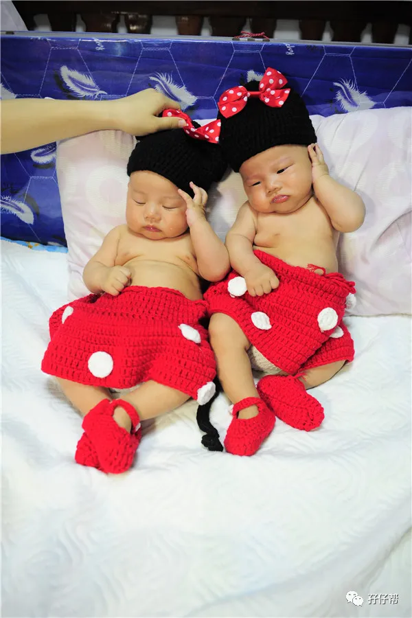
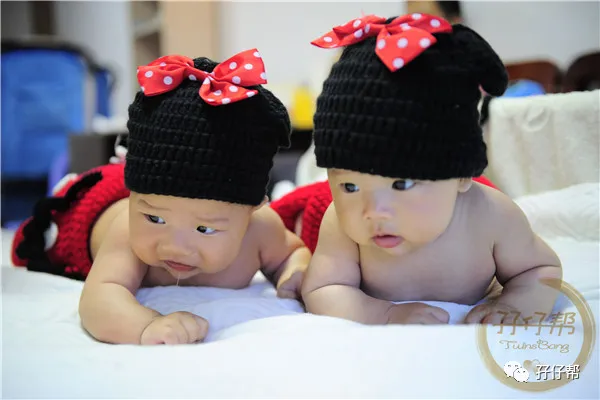
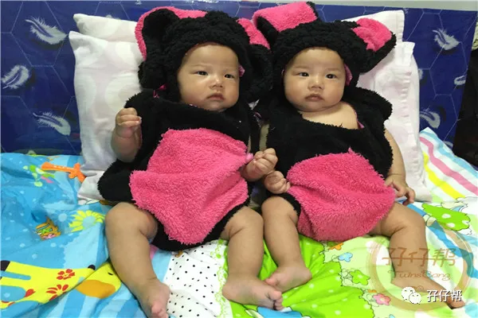
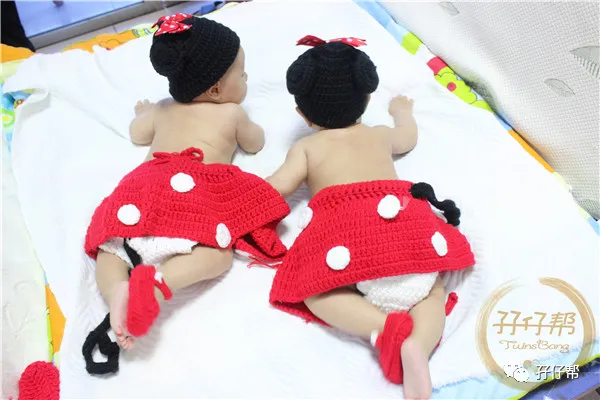
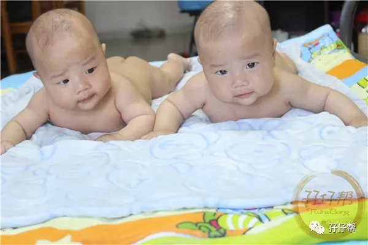
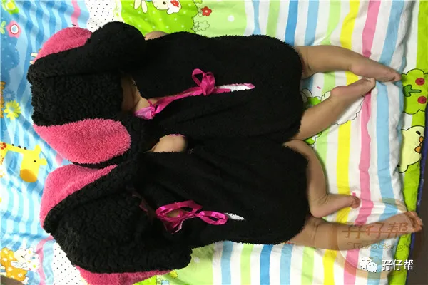
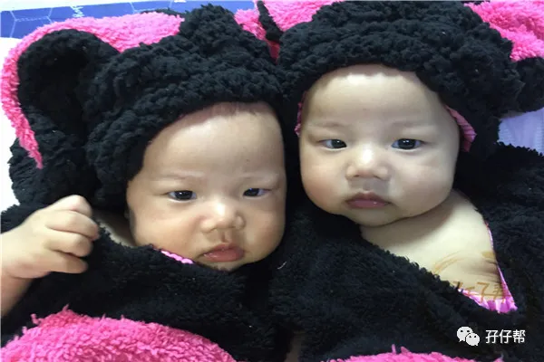
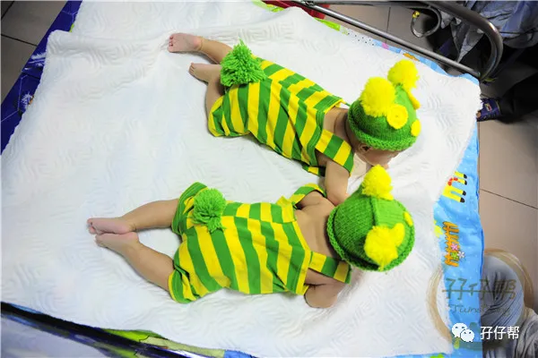
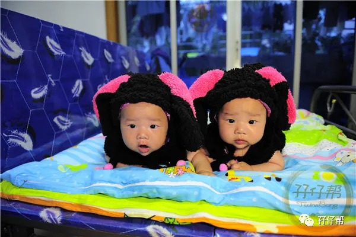
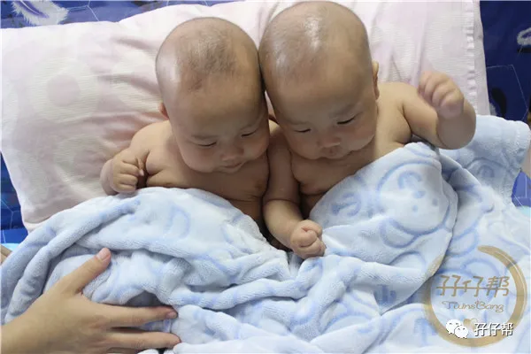
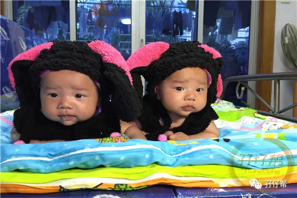